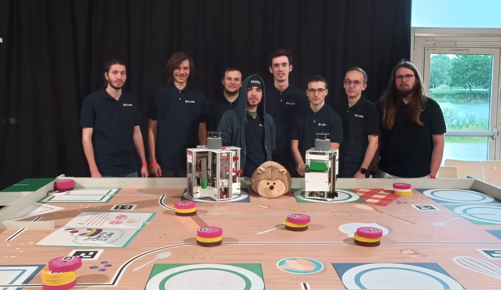

3.
Robots Coupe de France de Robotique 2023
¶

Contenu:
3.1. Introduction
3.1.1. Sujet
3.1.2. Choix
3.1.3. Robot n°1 PI
3.1.4. Robot n°2 POU
3.2. Architecture Robot 1 PI
3.2.1. Introduction
3.2.2. Strategie CdFR
3.2.3. Deplacement
3.2.4. Actionneurs
3.2.5. Cartes
3.3. Architecture Robot 2 POU
3.3.1. Introduction
3.4. Configuration_Ubuntu
3.4.1. Introduction
3.4.2. Mises a jour
3.4.3. Hotspot WIFI et IP fixes
3.4.4. SSH
3.4.5. Fixer nom des ports USB
3.4.6. ROS2 au demarrage
3.5. Motorisation
3.5.1. Introduction
3.5.2. Pilotage des moteurs
3.5.3. Les interuptions
3.6. Alimentation
3.6.1. Source d’alimentation
3.6.2. Carte d’alimentation
3.7. Lidar
3.7.1. Introduction
3.7.2. Cablage
3.7.3. Installation
3.7.4. Lancement du lidar
3.7.5. Visualisation du lidar
Doc Outil Crubs
Navigation
Contents:
1. Gestion
2. Programmation et Informatique
3. Robots Coupe de France de Robotique 2023
3.1. Introduction
3.2. Architecture Robot 1 PI
3.3. Architecture Robot 2 POU
3.4. Configuration_Ubuntu
3.5. Motorisation
3.6. Alimentation
3.7. Lidar
4. Robots Coupe de France de Robotique 2024
5. Imprimante 3D Voron 0.1
6. CAO
7. FAO
8. Banc de test portatif
Related Topics
Documentation overview
Previous:
2.7.1.
Arduino
Next:
3.1.
Introduction
Recherche rapide
{kind=link}